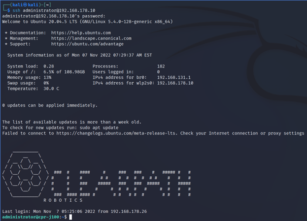

Tactic: Initial Access
Technique: Default Credentials
Standard protocols and services often come with default passwords set by the manufacturer of the robot*. If the owner
of the robot does not change these default credentials, an attacker can try to access the machine by using these
credentials, which are often publicly available.
*
https://www.roboticstomorrow.com/article/2018/04/securing-the-robots/11719 https://www.csoonline.com/article/3187459/robots-lots-of-features-not-much-security.html
Technique in practice
Article: attackers using
default credentials to target businesses
Article: risks of default passwords on the internet
Vaak kunnen default credentials online gevonden worden.
Mitigations
The default password of any protocol that is publicly accessible should be changed to something unique. A strong
password should be assigned to it instead.
A strong password usually has a minimal character limit of atleast 8, atleast one uppercase, one number and a special character.
This increases the amount of characters to check for every position and makes password cracking take a lot longer.
Detections
It is very hard to detect unlawful access through default credentials, since the traffic looks exactly the same as
lawful access. It is best not to try and detect this technique, but instead to always apply the mitigation, since it
has no costs except implementation.
If any detection method is to be applied, the defender can monitor logon sessions for default credentials to log
what machines have accessed the robot.
Documented incidents with autonomous robots
During a pentest on a Jackal robot from Clear Path Robotics, default administrator credentials were pulled from the
internet. The credentials on the robot were not changed by its owners, and the default credentials granted admin
access on the machine.

Documented incidents in other domains
[2022] Attackers
using default credentials to target businesses, Raspberry Pi and Linux top targets